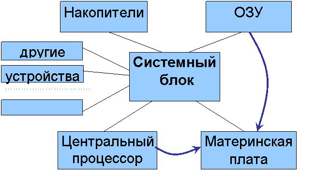
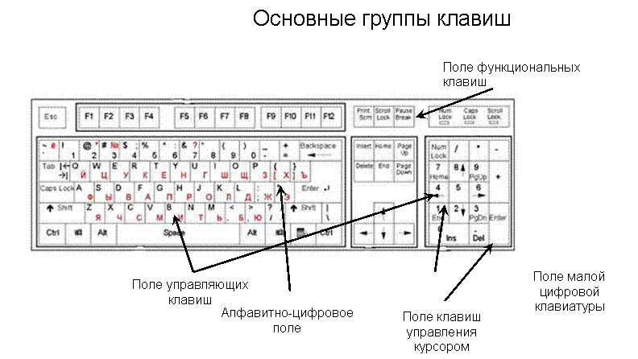

2. Назначение и состав базового программного обеспечения.
Состав и назначение системного ПО.
Системное программное обеспечение (System Software) - совокупность программ и программных комплексов для обеспечения работы компьютера и сетей ЭВМ.
СПО управляет
ресурсами компьютерной системы
и позволяет пользователям
Системное программное обеспечение предназначено для:
· создания операционной среды функционирования других программ (другими словами, для организации выполнения программ);
· автоматизации разработки (создания) новых программ;
· обеспечения надежной и эффективной работы самого компьютера и вычислительной сети;
· проведения диагностики и профилактики аппаратуры компьютера и вычислительных сетей;
·
выполнения вспомогательных
Данный класс программных продуктов тесно связан с типом компьютера и является его неотъемлемой частью.
Программные продукты
данного класса в основном ориентированы
на квалифицированных
Однако знание базовой технологии работы с этим классом программных продуктов требуется и конечным пользователям персонального компьютера, которые самостоятельно не только работают со своими программами, но и выполняют обслуживание компьютера, программ и данных.
Программные продукты данного класса носят общий характер применения, независимо от специфики предметной области.
К системным программным
продуктам предъявляются
В СПО традиционно включают
· системные управляющие и системные обрабатывающие программы.
Управляющие системные программы организуют корректное функционирование всех устройств системы.
Основные системные функции управляющих программ - управление вычислительными процессами и вычислительными комплексами и работа с внутренними данными ОС.
Как правило, они находятся в основной памяти. Это резидентные программы, составляющие ядро ОС. Управляющие программы, которые загружаются в память непосредственно перед выполнением, называю транзитными (transitive).
В настоящее время
системные управляющие
Обрабатывающие
системные программы
Эти программы поставляются чаще в виде дистрибутивных пакетов, включающих ПООперационная система, ОС (OS - operating system) - базовый комплекс компьютерных программ, обеспечивающий управление аппаратными средствами компьютера, работу с файлами, ввод и вывод данных, а также выполнение прикладных программ и утилит.
При включении компьютера операционная система загружается в память раньше остальных программ и затем служит платформой и средой для их работы.
С 1990-х гг. наиболее
распространёнными
Основные функции ОС:
- загрузка приложений в оперативную память и их выполнение;
- стандартизованный
доступ к периферийным
- управление оперативной памятью;
- управление
энергонезависимой памятью (
- пользовательский интерфейс.
Дополнительные функции ОС:
- параллельное
или псевдопараллельное
- взаимодействие между процессами;
- межмашинное взаимодействие (компьютерная сеть);
- защита самой
системы, а также
- разграничение
прав доступа и
Семейства и хронология операционных систем
Наиболее древняя из успешных операционных систем - UNIX (1969 г.). Она до сих пор остается одной из основных систем на компьютерах, которые выполняют роль серверов, и от нее порождено множество UNIX-подобных ОС.
В 1981 г. фирма IBM выпустила персональный компьютер (IBM PC), архитектура которого стала стандартом в мире. Все персональные компьютеры принято разделять на IBM-совместимые (абсолютное большинство) и IBM-несовместимые, например компьютер Macintosh, производимый фирмой Apple. Компьютеры Macintosh работают под управлением операционной системы MacOS.
В 1982 г. фирма Microsoft выпустила ставшую на долгие годы самой популярной для IBM-совместимых ПК операционную систему MS-DOS (Disc Operating System).
В 1985 г. все та же Microsoft выпустила первую версию Windows, которая развилась и на сегодня является самой распространенной операционной системой с самыми популярными прикладными программами.
1991 г. - год рождения операционной системы Linux - основного конкурента Windows, получающего все более широкое распространение.
Кроме того, можно перечислить много названий операционных систем различных производителей, например: Netware (Novell), OS/2 (IBM), SunOS (Sun Microsystems), Java Desktop System (Sun Microsystems), FreeBSD (одно из open source ответвлений UNIX) и т.д.
ОС Microsoft Windows
MS Windows (произносится Виндоуз) - семейство операционных систем компании Microsoft (Майкрософт). Глава корпорации Microsoft - Билл Гейтс.
Начиная с 1995 г. Windows - самая популярная операционная система на рынке персональных компьютеров - стандарт де-факто. К 2005 г. Microsoft Windows была установлена более чем на 89% персональных компьютеров.
Однако многие пользователи сделали выбор в пользу ОС Windows, так как совсем не знакомы с альтернативами, такими как MacOS, Linux, BSD. До начала 2000-х гг. в России почти все персональные компьютеры продавались с предустановленной операционной системой Windows. Борьба с распространением пиратских версий программных продуктов привела к появлению интереса к другим операционным системам. Так, например, стало возможным приобрести персональный компьютер с предустановленной бесплатной ОС Linux.
Операционная система Microsoft Windows включает в себя стандартные приложения, такие как браузер Internet Explorer, почтовый клиент Outlook Express, проигрыватель Windows Media Player.
Вокруг факта включения таких стандартных продуктов в ОС Windows разгорается много споров и дискуссий, поскольку это создает серьезное препятствие для распространения конкурирующих продуктов.
Для MS Windows существует очень удобный и освоенный большинством пользователей пакет прикладных программ Microsoft Office, включающий:
- текстовый процессор MS Word,
- табличный процессор MS Excel,
- органайзер MS Outlook,
- приложение для подготовки презентаций MS PowerPoint,
- приложение для управления базами данных MS Access.
Не стоит забывать, что и ОС Windows, и абсолютное большинство популярных прикладных программ под Windows имеют лицензию copyright, т.е. являются проприетарным ПО. Соответственно каждая копия такой программы должна приобретаться за деньги. Например, на конец 2007 г. цена на Windows Vista Home Basic Russian DVD - 3 240 руб., Office 2007 Win32 Russian CD - 12 280 руб.
Используя нелицензионное (пиратское) ПО, защищенное лицензией copyright, вы нарушаете законодательство о защите авторских прав.
ОС Linux
Операционная система Linux (произносится «линукс») - свободная UNIX-подобная операционная система. Это самая мощная альтернатива MS Windows, популярная в качестве серверной и резко набирающая популярность в качестве настольной (desktop) операционной системы в последние годы, в связи с усилением контроля за соблюдением лицензионного использования ОС Windows со стороны Microsoft в версиях XP и Vista.
К операционной системе Linux также часто относят программы, дополняющие эту операционную систему, и прикладные программы, делающие её полноценной многофункциональной операционной средой.
В отличие от большинства других операционных систем, Linux не имеет единой «официальной» комплектации. Вместо этого Linux поставляется в большом количестве так называемых дистрибутивов, в которых программы соединяются с ядром Linux и другими программами. Самые распространённые в мире дистрибутивы:
- американский Red Hat и его наследник Fedora Core;
- немецкий SuSE;
- французский Mandriva (бывший Mandrake);
- не имеющий
национальной принадлежности
- один из самых
старых дистрибутивов
- сравнительно
молодой и активно
- молодой, но
перспективный дистрибутив
Создатель ядра Linux - Линус Торвальдс. Linux не имеет географического центра разработки. Нет и организации, которая владела бы этой системой; нет даже единого координационного центра. Программы для Linux - результат работы тысяч проектов. Некоторые из этих проектов централизованы, некоторые сосредоточены в фирмах, но большинство объединяют программистов со всего света, которые знакомы только по переписке. Создать свой проект или присоединиться к уже существующему может любой, и в случае успеха результаты работы станут известны миллионам пользователей. Пользователи принимают участие в тестировании свободных программ, общаются с разработчиками напрямую, что позволяет быстро находить и исправлять ошибки и реализовывать новые возможности.
На рынке серверных операционных систем Австралии Linux уже заняла около 30%. За австралийцами последовали и бразильцы. Бразильское правительство решило отказаться от расходования средств на программное обеспечение и перейти с продуктов Microsoft на системы с открытым кодом, в частности, ОС Linux. Главная причина изменений - экономическая. В нашей стране рынок Linux пока невелик.
14.Назначение программ переводчиков текстов с различных языков.
"Программы переводчики"
1. Машинный Перевод в мире
Принято считать, что мировая история машинного перевода началась с развитием компьютеров, однако идея создания механизма, способного осуществлять перевод текста с одного языка на другой, появилась еще в первой половине XVII века. Появление компьютеров позволило начать воплощение этих проектов в жизнь.
Современные технологии машинного перевода далеко ушли от первых попыток "научить" компьютер переводить текст. Сегодня системы машинного перевода по праву принадлежат к классу систем искусственного интеллекта, поскольку выполняют отдельные функции интеллекта человека: они конструируют текст на выходном языке на основе входного текста, пользуясь сводом определенных правил, заданных в виде структур данных и алгоритмов.
2. Классификация систем перевода
1. Системы машинного перевода (МП)
Системы машинного перевода - программы, осуществляющие полностью автоматизированный перевод. Главным критерием программы является качество перевода. Кроме этого, для пользователя важными моментами является удобство интерфейса, лёгкость интеграции программы с другими средствами обработки документов, выбор тематики, утилита пополнения словаря. С появлением Internet основные поставщики систем машинного перевода включили в свои продукты Web-интерфейсы, обеспечив при этом их интеграцию с остальным программным обеспечением и электронной почтой, что позволило применять механизмы МП для перевода Web-страниц, электронной корреспонденции и онлайновых разговорных сеансов.
Ассоциации машинного перевода:
На их сайтах
можно найти сведения о ежегодных
конференциях по проблемам МП, информацию
о новейших технологиях перевода,
материалы о научных
Association for Machine Translation in the Americas (AMTA) www.amtaweb.org
The European Association for Machine Translation (EAMT) www.eamt.org
The Association for Computational Linguistics (ACL) www.aclweb.org/
Japan Electronic and Information Technology Industries Association (JEITA)
www.jeita.or.jp/index.htm
Международная ассоциация пользователей систем машинного перевода TAUS www.translationautomation.com
2. Системы перевода с функцией Translation Memory (TM)
Предоставляют средства для так называемого Machine Assisted Human Translation (MAHT) - перевода, выполняемого человеком с помощью машины. Первоначальное предназначение систем ТМ - облегчение работы переводчиков при локализации программных продуктов и создании терминологических баз данных, в дальнейшем системы стали развиваться как вспомогательный инструментарий переводчика. Особое внимание уделяется поддержке форматов всевозможных процессоров.
3. Контролируемый язык и машинный перевод на основе базы знаний
В системах на основе
контролируемого языка
4. Онлайн переводчики
Службы онлайн
перевода выполняют перевод
Как правило, существует ограничение на объем вводимого текста. Так же существует различие в количестве языков, на которые переводчик способен переводить и с которых.
Онлайн перевод с Английского – English:
· Компания ПРОМТ Текст 500/2000 знаков, web.
· Україна онлайн Текст 1000 знаков.
· Babel Fish Translation Текст 150 слов, web. Англ.
· Free2Professional Текст 750 слов. Англ.
· Google Переводчик Текст ? слов, web.
· Im Translator Текст 1000 знаков. Англ.
· Pragma он-лайн перевод Текст 1 Кб.
· Systran Текст ~800 знаков, web. Англ.
· WorldLingo Текст ? знаков, web
Онлайн перевод с Украинского – Ukrainian:
· Україна онлайн Текст 1000 знаков.
· Pragma он-лайн Текст 1 Кб.
· ProLingOffice Текст 750 знаков.
· ProLinGOnline Текст 500 знаков.
Коллекция ссылок на онлайн переводчики :
http://transer.info/publ/3-1-
5. Онлайн словари
Существует возможность поиска, есть строка ввода и меню для выбора входного и выходного языка, среди словарей - SDL-TRADOS MultiTerm, Langenscheidt's New College Dictionary online, ABBYY Lingvo и т.д.
6. Услуги по переводу в Интернете
Практически каждая компания-производитель систем машинного перевода предлагает услуги по переводу. Чаще всего пользователю представляется возможность выбора: получить только машинный перевод, либо машинный перевод с последующим редактированием профессиональным переводчиком, либо перевод, выполненный профессиональным переводчиком. Такого рода сервис можно встретить по адресу http://www.plustranslation.com ( сервис компании Transparent Language). Цена варьируется от 0.01 долларов за слово при машинном переводе до 0.38 при переводе с участием переводчика. Подобные услуги есть у SYSTRAN, L&H, Langscheidt, Language Engineering Corporation.
7. Средства для работы в Интернете:
Многоязычные браузеры:
· Internet Explorer
· Mozilla Firefox
· Safari
· Google Chrome
· Opera
3. Перечень онлайн-переводчиков и словарей
Ace Translator 8.3.2.503
Ace Translator - интернет переводчик, работающий на мощном движке, который позволяет быстро и качественно переводить как любой сложности тексты, так и Веб-страницы, электронные письма, чаты и т.д. Программа имеет многоязычный интерфейс (включая русский) и поддерживает перевод около 58 языков мира.
Pragma 6.0.101.11 Business + Cловари 6.0.100.10
Pragma 6.0.101.11 Business + Cловари 6.0.100.10 - это многоязычная программа для перевода текстовых документов с одного языка на другой. Программа поддерживает семь языков: английский, русский, украинский, немецкий, латышский, польский и французский. Pragma выполняет перевод непосредственно в окне активного приложения или в отдельном окне быстрого перевода.
QDictionаry v1.6 Full Portable (134 словаря) (2010/Rus)
Быстрый электронный словарь - переводчик. Имеет возможность переводить фразы а также выражения простым наведением на них курсора. Функционирует с Internet Explorer, Outlook Express и иных на движке Explorer. В остальных приложениях (Firefox, Opera а также др. ) имеете возможность переводить текст двойным щелчком мыши или другими "горячими" клавишами. Lingvo 12 12.0.0.356 (RU)
Lingvo 12 (многоязычная версия). Двенадцатая по счету версия самого популярного продукта компании ABBYY – Lingvo, в очередной раз доказывает, что больше не существует трудностей в переводе с иностранных языков. Предоставляя множество словарей и дополнительные функции, помогающие освоить иностранный язык, Lingvo 12 станет вашим лучшим помощником в переводе.
Lingvo OnLine! позволяет переводить слова с английского на русский и обратно с помощью одного из двух сервисов – lingvo.yandex.ru или lingvo.ru.
PROMT Freelance 9.0.410
PROMT Freelance 9.0 – Инструмент для автоматизации процесса перевода текстов, предназначенный для переводчиков, работающих вне офиса. Лингвистический редактор "Переводчик PROMT" – основа PROMT Freelance 9.0, позволяющая выполнить перевод любой сложности. Благодаря обновлению алгоритмов и существенному расширению словарей (в них добавлено более 300000 новых слов) перевод высокого качества можно получить уже при работе с базовым комплексом настроек системы
Promt NET Expert 8.5 Server + Expert 8.5 Giant + 4U 8.5 Giant + Спец. словари
PROMT Expert 8.5 - мощная система для профессионального перевода документов. Интегрируется с профессиональной системой Translation Memory SDL TRADOS 2007, а также встраивается в MS Office 2003-2007, популярные web-браузеры Internet Explorer и FireFox, электронную почту, PDF-документы и ICQ.
GoldenDict 0.9.0 Rus Portable
GoldenDict - cловарь для перевода слов с одного языка на другой. Поддерживает форматы StarDict, Babylon, Lingvo .dsl, dictd, имеет систему морфологии, всплывающее окошко и многое другое. GoldenDict - Удобный в использовании электронный многоязычный словарь с функцией интеграции с онлайн-сервисами.
TranslateIt! 8.0 build 7 ML RUS
TranslateIt! - контекстный англо-русский, русско-английский, немецко-русский и испанско-русский словарь. Ненавязчивого помощника, с помощью которого можно читать новости и почту, просматривать сайты на иностранном языке, работать с нерусифицированными справками и программами.
Dicter 3.05
Dicter является неофициальным клиентом Google-переводчика. Всего 1,2 Mb и вы в один клик можете сделать перевод с / на 42 языка в любых программах и приложениях Windows в любое время, при условии подключения к Интернету. Выделите текст и нажмите комбинацию клавиш Ctrl + Alt, чтобы получить перевод во всплывающем окне. Программа бесплатна, полезна и удобна - не требует никаких дополнительных словарей.
Client for Google Translate PRO v4.4.360
Client for Google Translate - очень удобная и практичная программа, которая моментально переводит выделенный в окне браузера текст с более 50 языков. Client for Google Translate работает также в приложениях Windows таких как Outlook, MS Word и пр. После установки вы увидите иконку Client for Google Translate в системном трее и каждый раз, когда вы хотите перевести некоторый текст, все что вам нужно сделать, это выбрать (выделить) текст и все будет переведено мгновенно!
Коллекция дополнительных словарей для ABBYY Lingvo 12
ABBYY Lingvo - без преувеличения лучшая программа в линейке компьютерных словарей на сегодняшний день. Коллекция дополнительных словарей для ABBYY Lingvo 12 поможет Вам более полно использовать все возможности этой замечательной программы. В архиве 43 дополнительных словаря.
Babylon Pro 8.0.5 (r2) Rus
Babylon - словарь, позволяющий переводить слова с одного языка на другой. Словарь Babylon имеет более 75 языков для перевода. Работать со словарем очень просто - после нажатия кнопкой мыши на интересующее слово появляется окно с его переводом. Babylon прост в использовании, доступ к 1300 словарям и энциклопедиям, проверка правильности написания, пересчет валют, времени и физических величин посредством одного щелчка, широкий спектр тем: наука, техника, спорт, медицина, военное дело, аппликатура аккордов и т.д, вывод переведенного текста в разных вариантах перевода подходящего к предложению.
Socrat Personal-4.1.1 portable
СОКРАТ ПЕРСОНАЛЬНЫЙ- Неплохой и компактный переводчик. Это система автоматического перевода с английского языка на русский и наоборот, предназначенная для работы со сравнительно небольшими текстами общей тематики. Перевод почтовых сообщений. Различные варианты ввода текста. Низкие системные требования. Перевод стандартных Help'ов других программ.
MultiTranse 6.0.3
MultiTranse - компактная программа, предназначенная для перевода небольших текстов средствами бесплатных онлайновых сервисов. Объем переводимых текстов ограничен 6 тыс. знаков, а число поддерживаемых языков равно 15 (включая направления Eng-Rus и Rus-Eng).
Web Translator
Эта программа умеет переводить сразу в нескольких направлениях. Среди языков, с которыми умеет работать Web Translator – английский, французский, испанский, немецкий, португальский, итальянский, русский и еще несколько других.
Программа умеет работать в двух режимах – в режиме Web и в режиме Text. Переключает их одноименная кнопка на панели инструментов программы.
Кроме того, программа может переводить содержимое RTF- и ТХТ-файлов.
Программа сможет работать как web-браузер и переводить содержимое сайтов.
VuDictionary
VuDictionary – это простой словарь для перевода английских слов, который умеет работать в фоновом режиме. Программа может переводить только с английского на русский, работая со стандартным словарем.
Multitran
Автоматический словарь Мультитран - система для переводчиков с русского, английского, немецкого, французского, итальянского, испанского, нидерландского, латышского, эстонского и японского языка. Содержит более пяти миллионов терминов и предоставляет возможности алфавитного, морфологического и фразового поиска.
4. Основные даты в истории Машинного Перевода
1629 - Рене Декарт предложил универсальный язык, в котором один символ выражает эквивалентные идеи различных естественных языков.
1933 - Русский изобретатель П.П. Смирнов-Троянский получил патент на "машину для подбора и печатания слов при переводе с одного языка на другой".
1939 - Лаборатории Bell Labs на Всемирной ярмарке в Нью-Йорке демонстрирует первое электронное устройство синтеза речи.
1947 - дата рождения
машинного перевода как
1954 - Первая публичная
демонстрация системы
1960 - Бар-Хиллел публикует отчет, в котором утверждается, что корректный автоматический перевод в принципе невозможен.
1964 - Национальная
Академия Наук США основала
Комитет по проблемам
1968 - Питер Тома,бывший лингвист из Джоджтаунского университета, основывает одну из первых фирм-разработчиков систем машинного перевода - "Система автоматического перевода и электронные коммуникации" (Latsec).
1983 - Представлена
автоматическая система
1988 - Ученые из
Исследовательского центра
1990 - Dragon Systems выпускает программу DragonDictate, первую систему преобразования устной речи в письменную, способную распознавать 30 тысяч слов.
Darpa запускает программу "Системы разговорной речи" (SLS) с целью разработки приложений, обеспечивающих голосовое взаимодействие между человеком и машиной.
1991 - Появилась
первая рабочая станция
1992 - ART-ITL основала
Консорциум исследований в
Фирма BBN Technologies демонстрирует первую готовую рабочую станцию Машинного Перевода с поддержкой автоматического распознавания речи в реальном времени на основе двадцатитысячного словаря независимо от личности говорящего..
Parlance Corporation, дочерняя компания BBN Technologies, выпускает программу Name Connector, первую международную АТС, которая перенаправляет телефонные звонки на основе распознавания произнесенных вслух имен.
1999 - Телевизионная
передача новостей
Фирма Logos выпускает программу e.Sense Enterprise Translation, первый многоязычный Веб-переводчик на базе единого сервера.
IBM выпускает ViaVoice для Макинтошей - первую систему перевода для компьютеров этой платформы. .
В Институте информационных исследований (ISI) при Южнокалифорнийском университете реализована обратная транслитерация имен собственных, которые заменяются приближенными фонетическими соответствиями. Southern California переводится на арабский как "Janoub Kalyfornya".
Специалисты в области биомедицинской инженерии, Теодор Бергер (Theodore Berger) и Джим-Ши Лио (Him-Shih Liaw) создали новую Нейросетевую систему распознавания речи Berger-Liaw, которая понимает разговорные языки лучше самих людей.
Немного шутливо заглядывая в будущее:
2011 - Microsoft останавливает свою кампанию "О чем вы хотите подумать сегодня?" после единодушного осуждения разработанного ею многообещающего Интерфейса распознавания мысли (TRI).
2020 - "Обучение детей чтению и письму - бесполезная трата времени", заявил Йео Киа Вей, министр образования Сингапура и упразднил изучение этих предметов в школе. "Дети должны быть избавлены от тягостного труда по распознаванию крошечных значков на бумаге или на экране. Пусть этим занимаются машины".
2043 - Строительство Вавилонской башни завершено в Ираке (бывшей Вавилонии) после 4000-летнего перерыва, благодаря Универсальному языку компании NEC Technologies.
2058 - Реформированный Институт Рифкина (RRI) получил патент на изобретенный им симбио-паразит, который питается электрическими импульсами центра речи человеческого мозга и выдает переведенный сигнал, который может быть понят всяким, кто вставит это устройство себе в ухо. Контора Дугласа Адамса возбудила иск, заявив о своем первоочередном праве на изобретение.
2264 - "Человек
глуп, как мешок опилок", заявило
Устройство 296. "Только абсолютно
наивным ученым могло прийти
в голову разработать
Состав оборудования современного ПК (аппаратная конфигурация) может изменяться в зависимости от области применения.
Наиболее типичный состав оборудования ПК – базовая конфигурация:
- системный блок
- клавиатура
- мышь
- монитор
Устройства, находящиеся внутри системного блока, называются внутренними, а устройства, подключаемые к нему снаружи, внешними или периферийными. Внешними являются большинство устройств ввода-вывода и некоторые устройства, предназначенные для длительного хранения данных.
Подключение внешних устройств к системному блоку производится через переходные аппаратно-логические устройства (порты), называемые аппаратными интерфейсами.
Группы интерфейсов:
- последовательные – передают данные последовательно, бит за битом.
- параллельные - передают данные группами битов.
Стандарты на аппаратные интерфейсы в вычислительной технике называют протоколами.
Протокол — это совокупность технических условий, которые должны быть обеспечены разработчиками устройств для успешного согласования их работы с другими устройствами.
Системный блок – основная часть компьютера, представляющего собой корпус с блоком питания и рядом устройств (комплектующих), размещенных в этом корпусе и необходимых для функционирования ПК.
Основные классы системных блоков:
- Tower (башня) – имеет корпус вертикального исполнения.
- Desktop (рабочий стол) – имеет корпус горизонтального исполнения.
Блок питания - элемент системного блока, преобразующий переменный ток бытовой сети в постоянный ток заданного напряжения, необходимый для работы всех электронных устройств компьютера. Блок питания обычно смонтирован и поставляется вместе с корпусом системного блока, для которого он предназначен.
Комплектующие системного блока:
1)материнская плата (системная плата, «мама», Motherboard) – это основная плата компьютера, которая объединяет и координирует работу всех комплектующих ПК.
Основные параметры материнской платы определяют:
- форм-фактор – определяет возможность установки в тот или иной вид корпуса и варианты расположения разъемов
- чипсет – набор микросхем
Чипсет – набор микросхем, обеспечивающих согласованную работу всех устройств компьютера – впаян в материнскую плату и состоит из двух чипов:
- северный мост (North Bridge) – обеспечивает взаимодействие процессора с высокоскоростными устройствами: основной памятью и видеоадаптером
- южный мост (South Bridge) – обеспечивает взаимодействие процессора со сравнительно низкоскоростными устройствами ввода/вывода: жестким диском , клавиатурой, мышью, платами и т.д.
Порт – это разъем на материнской плате, для подключения внешних устройств.
Виды портов:
- PS/2 – для подключения мыши (зеленого цвета) и клавиатуры (фиолетового цвета)
- USB (Universal Serial Bus – универсальная последовательная шина) – для подключения периферийных устройств
Слот (слот расширения) – разъем на материнской плате для установки карт (плат) расширения.
2)процессор - центральное устройство компьютера, которое выполняет арифметические и логические операции, заданные программой преобразования информации, управляет вычислительным процессом и координирует работу периферийных устройств.
Для стабильной работы процессору необходим дополнительный теплоотвод, который может быть:
- пассивный – обеспечивается установкой обычного радиатора
- активный – обеспечивается установкой вентилятора, который называется кулером.
3)оперативное запоминающие устройство (ОЗУ) (оперативная память) - устройство, предназначенное для хранения обрабатываемой информации (данных) и программ – характеризуется объемом, измеряется в гигабайтах (Гб).
4)жёсткий диск (винчестер) – устройство для постоянного хранения информации (данных и программ), основанное на принципе магнитной записи. В компьютере может одновременно устанавливаться несколько жестких дисков.
5)карты (платы) расширения - печатная плата, которую помещают в слот расширения материнской платы компьютерной системы с целью добавления дополнительных функций. Основные виды карт расширения:
- видеокарта (видеоадаптер, контроллер монитора, графический адаптер, графическая карта) – плата расширения ПК, обеспечивающая информационную связь между материнской платой и монитором, формирующая изображение на экране монитора.
- звуковая карта – плата расширения ПК для записи, воспроизведения и редактирования звуковых сигналов.
- сетевая карта - плата расширения, позволяющая ПК взаимодействовать с другими устройствами сети.
6)CD-привод – устройство для работы с CD дисками и их перезаписываемыми аналогами.
7)DVD-привод - устройство для работы с DVD дисками и их перезаписываемыми аналогами.
8)Флоппи дисковод – устройство для работы с дискетами .
Взаимодействие комплектующих:
Данные в оперативную память поступают из различных устройств, а результаты выполнения программ выводятся на внешние устройства.
Между любым внешним устройством и оперативной памятью имеется промежуточное звено контроллер (адаптер) – электронная схема, управляющая внешним устройством.
Взаимодействие всех контроллеров с процессором и оперативной памятью осуществляется через системную магистраль передачи данных – шину (системную шину) - набор проводников, связывающих воедино внутренние устройства с периферийными.
Основные виды шин:
- шина адреса (Address Bus) – предназначена для определения адреса (номера) устройства, с которым процессор обменивается информацией в данный момент.
- шина данных (Data Bus) - предназначена для передачи данных от оперативной памяти и устройств ввода-вывода к процессору и в обратном направлении.
- шина управления (Control Bus) – предназначена для синхронизации обмена информацией между устройствами, определения характера обмена информацией (считывание или запись информации из памяти нужно производить).
- шина питания (Power Bus) - предназначена не для пересылки информационных сигналов, а для питания системы электрическим током.

I. Аппаратные средства – физические компоненты компьютера («железо»). Минимальная конфигурация компьютера включает в себя системный блок, монитор и клавиатуру.
Обычно используют также мышь, принтер, сканер и другие устройства.
1. Системный блок – модуль компьютера, состоящий из материнской платы, центрального процессора, Iоперативного запоминающего устройства (ОЗУ), накопителей и других устройств.
Изобразить составные устройства системного блока можно в виде след схемы:

Рассмотрим эти устройства подробнее:
а) Материнская плата – основной аппаратный компонент компьютера, где реализованы, в частности магистраль обмена, разъемы для центрального процессора, оперативной памяти, слоты расширения для установки контролеров внешних устройств.
Упомянутая магистраль обмена служит для организации обмена данными между центральным процессором, оперативной памятью, устройствами ввода-вывода и др. устройствами. Она представляет собой совокупность трёх шин: шины данных, шины адреса и шины управления.
Б) Центральный процессор –пРоцессор, устанавливаемый в разъем материнской платы и управляющий работой всех компонентов компьютера.
В) ОЗУ – быстродействующая часть памяти компьютера в виде набора чипов, с помощью которой можно записывать данные и считывать их.
При выключении компьютера все данные, внесенные в ОЗУ, пропадают.
Г) Накопитель – устройство для записи информации на магнитные или лазерные диски и считывания информации с них.
Среди накопителей в первую очередь мы назовём жесткий диск(или винчестер, или накопитель на несъемном магнитном диске). На этом накопителе, или носителе, находится основной объем информации в компьютере. Далее – накопитель на съемном магнитном диске(или дисковод). С помощью дисковода мы можем записывать и считывать информацию с дискеты. Сейчас более распространены накопители на лазерном или оптическом диске – CD-ROM-ы, DVD-ROM-мы – которые считывают информацию с лазерных дисках. Лазерные диски бывают 3-х видов:
· Диски только для чтения;
· Диски с одноразовой записью: CD-R, DVD-R;
· Диски с многоразовой записью: CD-RW, DVD-RW.
Самые объемные – жесткие диски; лазерные диски (CD и DVD) вмещают до 6 Гбайт памяти, дискеты все стандартные –примерно 1,44 Мбайт памяти. Более популярны сейчас флэш-карты памяти, так называемые флэшки, они разного объема – вмещают до 16 Гбайт.
2. Монитор или Дисплей – модуль компьютера, на экране которого отображается текстовая и графическая информация.
С помощью монитора мы видим на экране результаты деятельности компьютера или своей работы.
3. Манипулятор Мышь – устройство для работы с графическим интерфейсом Windows.
В зависимости от способа определения величины перемещения мыши по коврику и её указателя на экране монитора мыши делятся на оптические(лазерные) или механические
Существуют мыши с 2-мя, 3-мя или 4-мя кнопками.
Приемы работы с основными клавишами мыши
1) Щелчок левой кнопкой мыши
2) Щелчок правой кнопкой мыши
3) Двойной щелчок левой кнопкой мыши
4) Перетаскивание объекта благодаря перемещению мыши при нажатой левой или правой кнопке
4. Клавиатура – модуль компьютера, используемый для ввода различных данных и команд в компьютер
Все клавиши на клавиатуре делятся на несколько групп.

Назначение управляющих клавиш
|
Клавиша |
Назначение |
|
Enter |
Ввод набранной команды или текста |
|
Esc |
Отмена текущего действия |
|
Tab |
Установка курсора на определенную позицию |
|
Caps Lock |
Режим прописных букв |
|
Shift, Ctrl, Alt |
Самостоятельного действия не имеют, действуют только при совместном нажатии с буквенной или управляющей клавишей |
|
Backspace |
Удаление символа слева от курсора |
|
Delete |
Удаление символа справа от курсора |
|
Number Lock |
Переключение режимов работы малой цифровой клавиатур |
Кратко перечислим другие аппаратные средства, которые не являются основными, но которые облегчают жизнь пользователя и функционально полезны.
1) Принтер – устройство, выводящее числовую, текстовую и графическую информацию на бумагу(существуют матричные, струйные и лазерные принтеры).
2) Сканер – устройство для оптического ввода фотографий, рисунков, слайдов, текстовых документов.
3) Колонки, наушники – устройства для вывода звуковой информации.
4) Микрофон – устройства для ввода звуковой информации.
5) Модем – устройство преобразования цифрового сигнала при его передаче по телефонным линиям. Существуют внутренние модемы(вставляются в слоты расширения материнской платы компьютера) и внешние.
II. Хранение информации.
Поговорим подробнее об устройствах хранения информации. Информацию необходимо хранить в памяти. Всю память компьютера условно разделим на внешнюю и внутреннюю.
Несмотря на то, что жесткий диск несъемный, он относится к внешней памяти, поскольку он тоже является переносимым и относится к внешней памяти.
Жесткий диск – это устройство, предназначенное для постоянного хранения часто используемых программ и данных. Состоит из пакета тонких круглых пластин, изготовленных из алюминия, или пластмассы, или стекла и покрытых тонких ферромагнитным слоев. У каждой пластины пакета имеется своя головка записи-считывания. При записи используется явление намагничивания ферромагнитного слоя, при считывании – явление электромагнитной индукции.
К внешней памяти также относятся вышеупомянутые дискеты, лазерные диски и флэш-карты.
К внутренней же части относятся оперативное запоминающее устройство, кроме него – постоянное запоминающее устройство(ПЗУ), кэш-память и т. д. Эти устройства представляют собой наборы микросхем.
В ПЗУ хранится информация, необходимая для самотестирования компьютера и начальной загрузки программы-загрузчика оперативной системы(о которой мы поговорим позже). При выключении компьютера все данные, внесенные в ПЗУ сохраняются благодаря наличия автономного питания.
Кэш-память – это сверхоперативная память запоминающего устройства, позволяющая увеличить быстродействие компьютера.
Таким образом, мы рассмотрели аппаратное обеспечение компьютера, т. е. его аппаратные средства.
ЛЕКЦИЯ 7
Тема: Автоматизированное рабочее место специалиста (АРМ).
Вопросы:
1. Понятие автоматизированного рабочего места специалиста (АРМ).
2. Структура АРМ-а специалиста.
3. Классификация АРМ-а
1. Понятие автоматизированного рабочего места специалиста (АРМ).
Организационно АИС реализуется через создание автомати зированных рабочих мест специалистов, состав которых зависит от структуры предприятия и соответствует комплексу решаемых задач.
Автоматизированное рабочее место (АРМ) — это рабочее место специалиста, оснащенное персональным компьютером, программным обеспечением и совокупностью информационных ре сурсов индивидуального или коллективного пользования, которые позволяют ему вести обработку данных с целью получения информации, обеспечивающей поддержку принимаемых им решений при выполнении профессиональных функций.
Отдел, оснащенный совокупностью АРМ работников этой службы, становится автоматизированным подразделением. В нем значительная часть рутинной работы по переработке информации выполняется компьютером. Вместе с тем специалист может активно вмешиваться в процесс решения задач обработки дан ных, самостоятельно формируя информацию, позволяющую при нимать обоснованные решения.
Компьютер становится повседневным орудием труда специалиста, органично вписываясь в технологию его работы. При: акцент переносится с формально-логических аспектов информации на процесс принятия решений. Такая технология сокращает поток бумажных носителей, снижает трудоемкость выполняемых работ, повышает профессиональный уровень работников и комфортность условий их работы: Как и при ручной технологии организации работы, специалист несет полную персональную ответственность за весь процесс, но, продолжая выполнять традиционные функции, он выступает и в роли оператоpa ПЭВМ, становясь непосредственным участником процесса автоматизированной обработки информации.
2. Структура АРМ-а специалиста.
АРМ включает пять основных компонентов:
Кроме этого, АРМ комплектуется документацией и методи ческими материалами по применению программ, а также регла ментами выполнения работ по обработке информации. Конкрет ная насыщенность каждой из компонент определяется решаемы ми задачами.
АРМ могут функционировать автономно или в составе компь ютерной сети. При автономном режиме работы АРМ создаются для решения отдельных функциональных задач и не могут опера тивно использовать всю информационную базу экономического объекта, а обмен информацией между различными АРМ выполня ется с помощью машинных носителей. Работа на базе компью терных сетей позволяет организовать обмен данными между АРМ по каналам связи, объединить информационное простран ство объекта управления и организовать доступ к нему любого работника в пределах его полномочий. Каждое АРМ рассматри вается как самостоятельная подсистема, а вместе они составляют единое целое. При этом начальник отдела имеет возможность ру ководить процессом решения функциональных задач и интегри ровать результаты работы отдельных специалистов, оперативно получая обработанную информацию для принятия решений. В то же время сохраняется возможность автономной работы каждого специалиста.
АИС может использовать не только локальные, но и глобаль ные сети для подключения территориально удаленных подразде лений и доступа к внешним информационным службам общего назначения: национальным информационно-поисковым системам, базам данных и т. п.
Организационная структура предприятия предопределяет но менклатуру (количество) АРМ, а декомпозиция целей и функций, а также распределение обязанностей между сотрудниками опре деляют функциональное содержание (функциональную направленность) конкретных АРМ — состав задач, которые будут решаться на конкретном рабочем месте. Специфика функций, выполняемых каждым из этих сотрудников, требует разных ин-, формационных и программных ресурсов. Распределение работ зависит от технической базы, а также от уровня компьютерной) подготовки специалистов. Как правило, АРМ организуются в соответствии с существующим распределением работ. В зависимо-1 ста от объема работ и общего числа компьютеров на одном рабочем месте могут решаться различные задачи. Возможен и другой вариант, когда одна задача будет распределена между несколькими рабочими местами.
3. Классификация автоматизированных рабочих мест
Любой специалист (экономист, юрист или др.) для успешного выполнения стоящих перед ним задач должен иметь соответствующим образом оборудованное рабочее место.
3.1. По степени автоматизации:
3.2. По количеству сотрудников, использующих АРМ, и выполняемых ими функций:
3.3. По ти пизации решаемых функциональных задач:
3.4. По специализации:
3.5. По технической базе создания АРМ:
Периферийными устройствами называют любую внешнюю аппаратуру, технику или оргтехнику (принтеры, сканеры, МФУ, роутеры, модемы, веб-комеры и т.д.), подключаемую к системному блоку или ноутбуку и расширяющую возможности и функциональность самого компьютера.

Подключение любого из устройств не вызовет трудностей у опытного пользователя, однако, если вы таковым не являетесь, эта процедура может оказаться для вас затруднительной, отнять много времени и спровоцировать неправильную работу подключенного устройства или, в совсем крайнем случае, его поломку и выход из строя.
Не секрет, что некоторые пользователи вообще не понимают, или им это просто не необходимо понимать, потому, что ненужно в жизни, у них другие заботы, какой штекер куда подключается, что такое драйвер и что это за диск нам дали в коробочке с компьютерной техникой и для чего он нужен. А диск в коробочке с ново купленным, или не новым, оборудованием, как правило, содержит на себе запись драйвера, вспомогательные программы и иногда в коробку, не знаю кто, продавцы или производители этого самого оборудования, подбрасывают бесплатный лицензионный софт, чем, иногда нимало радуют своих покупателей, то есть нас с вами. Диск с драйверами выбрасывать не рекомендуется, без драйверов ваша переферия откажется работать как не крути, а поиск нужных драйверов, иногда, выливается в очень значительную головную боль. Так вот, если вы не знаете или не понимаете куда какой штекер подключать, лучше не подключайте, лучше обратится в таком случае к гениальному соседу, или если таковой в данном случае отсутствует, в компанию по оказанию компьютерных услуг, что будет лучше, чем испортить приобретенный «примус» и нажить себе еще больше головной и без того боли.
Благо, на сегодняшний день, производители периферийных устройств додумались не подключать кабель напряжения и кабель коннекта с компьютером напрямую к плате устройства, находящейся внутри корпуса, что подразумевало, что при выходе из строя кабеля, нести в мастерскую все устройство, хотя иногда попадаются и такие шедевры, а сделали его, кабель, отдельной составляющей, входящей в комплект купленного аппарата.
В настоящее время, если вы как-то криво воткнули кабель в системник и сломали у этого самого кабеля контакт, можно просто поехать на рынок и купить другой кабель, но опять же это не решает проблемы с подключением.
Чем вы можете навредить подключаемому устройству, в настоящее время, если конечно не полезете приводить в порядок начинку отказавшейся работать машины?
Только неправильной его настройкой, неправильной установкой драйверов и программ, устройства в худшем случае откажутся работать либо будут работать неправильно, тем самым не используя полностью свой ресурс и нервируя вас своей нестабильной работой.
Прежде всего, это подключение переферии к сети напряжения, если требуется, подключение непосредственно к компьютеру, установка необходимых драйверов, установка сопутствующего программного обеспечения для устройства, без которого ему бывает вообще невозможно функционировать и настройка. Если все вышеперечисленные манипуляции выполнить верно, все будет работать как задумывалось производителем и соответствовать вашим ожиданиям.
Техническая основа ИТ и ИС экономики и управления представлена совокупностью взаимосвязанных единым управлением автономных технических средств сбора, накопления, обработки, передачи, вывода и представления информации, средств обработки документов и оргтехники, а также средств связи для осуществления информационного обмена между различными техническими средствами
Эффективное функционирование ИС базируется на комплексном использовании современных технических средств обработки информации и методов организации технологических процессов решения задач. Основой дальнейшего развития автоматизации управленческой деятельности в различных отраслях экономики является новая, прогрессивная информационная технология, ориентированная на использование последних достижений электронной техники в частности, высокопроизводительных, быстродействующих компьютеров и современных средств связи.
Создание новой технологии требует учета особенностей структуры экономических систем. Прежде всего, это сложность организационного взаимодействия, вызывающая необходимость создания многоуровневых иерархических систем (головная фирма, филиалы) со сложными информационными связями прямого и обратного направления с организациями-смежниками.
Главным элементом комплекса технических средств, предназначенных для автоматической обработки информации в процессе решения управленческих задач, является электронная вычислительная машина, или компьютер.
В сфере экономики это -- компьютеры различной мощности, быстродействия, размеров. Они предназначены для решения самых различных задач: экономических, математических, информационных и других задач, отличающихся сложностью алгоритмов и большим объемом обрабатываемых данных, и широко используются в мощных вычислительных комплексах.
Проблемно-ориентированные вычислительные средства служат для решения узкого круга задач, связанных, как правило, с управлением технологическими объектами, регистрацией, накоплением и обработкой относительно небольших объемов данных, выполнением расчетов по относительно несложным алгоритмам. Они обладают ограниченными по сравнению с универсальными компьютерами аппаратными и программными ресурсами.
Специализированные вычислительные средства используются для решения узкого круга задач или реализации строго определенной группы функций. К специализированным средствам можно отнести, например, программируемые микропроцессоры специального назначения; адаптеры и контроллеры, выполняющие логические функции управления отдельными несложными техническими устройствами, агрегатами и процессами; устройства согласования и сопряжения работы узлов вычислительных систем.
Компьютеры успешно применяются для вычислений в многопользовательских вычислительных системах, в системах автоматизированного проектирования, в системах моделирования несложных объектов, в системах искусственного интеллекта.
Наибольшей популярностью в настоящее время пользуются персональные компьютеры клона (архитектуры определенного направления) IBM, первые модели которых появились в 1981 г. Существенно уступают им по популярности персональные компьютеры клона DEC (Digital Equipment Corporation), в частности широко известные ПК Macintosh фирмы Apple.
Особую интенсивно развивающуюся группу компьютеров образуют многопользовательские, применяемые в вычислительных сетях серверы. Серверы обычно относят к микро ЭВМ, но по своим характеристикам мощные серверы скорее можно отнести к малым ЭВМ и даже к мэйнфреймам, а суперсерверы приближаются к суперЭВМ.
Сервер -- выделенный для обработки запросов от всех станций вычислительной сети компьютер, предоставляющий этим станциям доступ к общим системным ресурсам (вычислительным мощностям, базам данных, библиотекам программ, принтерам, факсам и др.) и распределяющий эти ресурсы. Такой универсальный сервер часто называют сервером приложений.
Серверы в сети часто специализируются. Специализированные серверы используются для устранения наиболее узких мест в работе сети: создание и управление базами данных и архивами данных, поддержка многоадресной факсимильной связи и электронной почты, управление многопользовательскими терминалами (принтеры, плоттеры) и др.
Вот основные из них: Файл-сервер (File Server) используется для работы с файлами данных. Архивационный сервер (сервер резервного копирования) служит для резервного копирования информации в крупных многосерверных сетях, использует накопители на магнитной ленте (стриммеры). Факс-сервер (Net SatisFaxiori) -- выделенная рабочая станция для организации эффективной многоадресной факсимильной связи. Почтовый сервер (Mail Server) -- то же, что и факс-сервер, но для организации электронной почты, с электронными почтовыми ящиками. Сервер печати (Print Server, Net Port) предназначен для эффективного использования системных принтеров. Сервер телеконференций имеет систему автоматической обработки видеоизображений и др.
После закупки рабочих станций, серверов и активного сетевого оборудования, мы приступили к их установке, в соответствии с заранее разработанным проектом сети, в котором учтена схема прокладки сетевых кабелей, расположения серверов, сетевого оборудования, предполагаемых рабочих мест и точек подключения к ним.
К основному ПО относится операционная система MS Windows XP и пакет программ предназначенных для нормальной работы персонала. А именно: MS Office 2003, набор драйверов для поддержки оптимальной работы системы, программа для проектирования AutoCAD и база САПР к нему, почтовый клиент The Bat, web браузер Opera, прокси-клиент UserGate.
Установка средств защиты ПО и АО
К средствам защиты относятся ПО антивирусы и межсетевой экран, АО - сетевые фильтры и источники бесперебойного питания.
В качестве антивируса был выбран AVP 5.0 Personal по причине невысокой стоимости, широкого функционала (антивирусный сканер, антивирусный монитор, планировщик заданий и т.д.), хорошей технической поддержке.
В качестве межсетевой экран был выбран Outpost Firewall. Причина такого выбора - относительно невысокая стоимость и популярность программы. Программа также обладает широким функционалом (детектор атак, защита файлов, активное содержимое, контроль рекламы и т.д.). Данный межсетевой экран был разработан российскими программистами, что исключает дополнительных ошибок в программе из-за ее локализации.
Средства защиты АО были рассмотрены выше в разделе 3 «Выбор программного и аппаратного обеспечения» проектной части дипломной работы.
После установки средств защиты программного и аппаратного обеспечение мы приступили к реализации сети. Для этого было закуплено следующее пассивное сетевое оборудование и инструмент:
· Розетка настенная RJ-45, 40 шт.
· Конекторы для витой пары, 100 шт.
· Кабель 5-й категории ExaLan+ на основе витой пары, 1500 м.
· Клещи обжимные RJ-45, 1 шт.
· Кабельный канал, 300 шт.
· Дюбель забивной, 1000 шт.
· Саморез, 100 шт.
· Отвертка, 2 шт.
· Молоток, 2 шт.
· Перфоратор, 1 шт.
· Бур, 10 шт.
В соответствии с проектом сети были проложены перфорированные кабельные каналы, закрепленные к стене дюбелями. В предполагаемых местах подключения абонентов были установлены розетки, прикрепленные к стене саморезами. Абонентские розетки соединены к перфорированным кабельным каналом специальным декоративным пластиковым каналом. Учитывая расположение рабочих станций и серверов, было определено местоположение для концентратора.
Для серверов сети было выделено отдельное помещение, в котором в специальный стеллаж были вмонтированы сервера. Также в этом помещении находится маршрутизатор, который предназначен для создания защищенного Интернет тоннеля между офисом компании и ее складом.
После установки, все оборудование было заземлено.
Кабель
Характеристики неэкранированных кабелей ExaLan+ на основе витой пары определены в диапазоне 100МГц как соответствующие требованиям категории 5е с высоким запасом по производительности (см. рисунок 2.6.1).
Обеспечивают поддержку приложений: 100Base-TX; 1000Base-T; Token Ring 100 Мбит/сек; TP-PMD; ATM LAN 155,52 Мбит/сек.
Огнестойкость кабеля в соответствии с ЕС 60332-1.
Поставляются в нескольких вариантах исполнения:
· для этажной разводки: оболочка из ПВХ (PVC) или LSZH, температура эксплуатации: -20... +60 Со
· для внешней прокладки: оболочка из полиэтилена (PE), температура эксплуатации: -40...+60 С
Кабели сертифицированы независимой тестовой лабораторией Delta (Дания) на соответствие стандартам: ISO/IEC 11801:2002 и IEC 61156-5:2002. Кабели входят в состав СКС ExaLan+ и обеспечиваются 20-летней расширенной гарантией в случае сертификации системы. При этом, в установленном порядке поддерживается не только гарантия на компоненты, но также на характеристики системы, поддержку приложений и трудозатраты. В случае, если система не была зарегистрирована в установленном порядке, действует отдельная 5-летняя гарантия на компоненты.[3]

Рисунок 2.6.1 - Кабель «витая пара» ExaLan+ UTP 5 категории
Технические характеристики:
· Тип кабеля UTP
· Оболочка кабеля PVC
· Диаметр кабеля 5,1
· Номинальный вес, кг/км 33,5
· Температура при монтаже, С 0 +/- 50
· Температура при эксплуатации, С -20 +60
· Минимальный радиус изгиба при эксплуатации, мм 20,4
· Минимальный радиус изгиба при монтаже, мм 40,8
Кабельный канал
Лотки перфорированные и лотки глухие предназначены для прокладки проводов и кабелей напряжением до 1000В при выполнении открытых электропроводок и открытой прокладки кабельных линий. [3]
Лотки изготавливаются из оцинкованного стального листа толщиной 0.7 мм и 1 мм (см. рисунок 2.6.2).
Вид климатического исполнения - УГ2.5 по ГОСТ 15150-96. Степень защиты по ГОСТ 14254 - 96:
· для лотков без крышек - IP00;
· для лотков перфорированных с крышками - со стороны крышки IP20;
· для лотков глухих с крышками- со всех сторон IP20;
Инструмент предназначен для обжима различных вилок, а также резки и зачистки кабеля (см. рисунок 2.6.3). Инструмент позволяет обжимать следующие типы вилок:
· HT-2096 - 6P6C/RJ-12
· HT-2094 - 4P4C
· HT-500 - 8P8C/RJ-45
· HT-568 - 8P8C/RJ-45
Абонентские розетки
Абонентские розетки устанавливаются на рабочих местах пользователей. В зависимости от условий монтажа возможен выбор конструкции для скрытой проводки или для монтажа розетки в декоративный короб. Угловая конструкция лицевой панели позволяет выполнить требования по допустимому радиусу изгиба для кабеля даже в случае использования короба сокращенной глубины
Розеточные модули имеют смонтированные на печатной плате одно или два гнезда RJ-45 (или RJ-12) экранированной или неэкранированной конструкции и гребенки IDC контактов для подключения проводников кабеля. Розетки монтируются непосредственно на стену (скрытый или наружный монтаж) или в декоративный короб. [3]
Конекторы для медных кабелей
Корпуса коннекторов RJ-45, RJ-11 и RJ-12 изготавливаются из бесцветного прозрачного термостойкого пластика. Для установки коннекторов применяется специальный обжимной инструмент. Механическая прочность соединения вилки и кабеля шнура обеспечивается рельефным хвостовиком и заливкой специальным компаундом.
Конструкция коннекторов 110 типа может иметь 1, 2, 3 и 4 пары, что обеспечивает гибкость при решении различных задач.
Корпус вилки собирается из двух половин, которые фиксируются пластиковыми защелками. Проводники шнуров подключаются к контактам, расположенным на одной из половин.